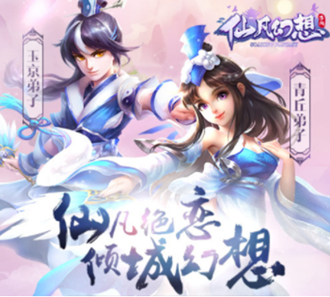

对于萌新来说，前期该如何快速的升级呢？怎么在前期不落后与人呢？肯定有不少的萌新玩家刚玩的时候和我一样，过完剧情任务之后不知所措，下面我就给各位萌新讲解一些前期的一些快速升级的方法吧。
 【引导任务】第一个小窍门，根据引导任务的目标，快速完成游戏内的引导任务，完成任务之后即可获得丰厚的经验奖励哦！首先跟着剧情跑一直到20级，在20级的时候可以选择做职业任务。（不要挂野外升级，经验少不值得）做完职业任务之后，等级已经差不多28级了，继续做剧情升级。（这时候可以找个公会加入）把剧情做到不能继续之后，我们就可以转做日常任务了！
【日常任务】在日常任务中我们可以优先做完捉妖任务，捉妖任务组队人数越多，享受的额外经验加成越多，可以多组一些好友一起打，记得领双倍哦！ 把30次悬赏都做完之后，等级已经超过35了，熔炉秘境和火玉秘境两大副本都开启了，可以自行找好队友，一起去挑战！注意35级的时候会开启的丹鼎炼化功能，把一些不常用的东西炼化，可以转化成经验，这个对于前期提升等级是有很大的帮助的。 上面的日常任务都做完之后也可以去把10次巡山任务也顺便做了，这个时候你离40级也差不多了或者已经到达40级了。
【每日活动】当我们把日常任务都已经完成之后，就可以去参加每日的一些定时活动哦，在每日的日常活动中，有大部分的活动都是可以与自己的好友组队一起参与的哦，不仅可以让你参与活动获得游戏内的活动奖励，还能与游戏中的好友一起玩耍，岂不是美哉！
说了这么多，应该也对萌新的你有所帮助吧。各位仙友们！除此之外呢，游戏内还有其他丰富开放和暂未开放的玩法哦，当然啦，这些都是需要各位仙友们后续自己在游戏中探索和体验啦~